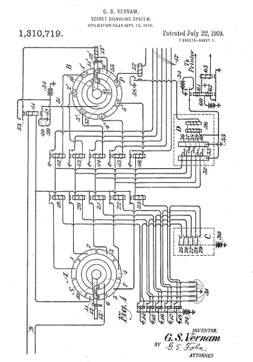

Micah Denbraver
Django One-Day Unconference
San Diego, Nov. 15, 2014

P I E message
15(P) 8(I) 4(E) message
+ 4(E) 0(A) 19(T) key
=19 8 23 message + key
=19(T) 8(I) 23(X) ciphertext (mod 26)
T I X ciphertext
T I X ciphertext
19(T) 8(I) 23(X) ciphertext
- 4(E) 0(A) 19(T) key
=15 8 4 ciphertext - key
=15(P) 8(I) 4(E) message (mod 26)
P I E message
This example uses modulo 26 addition and subtraction, while the
/
#